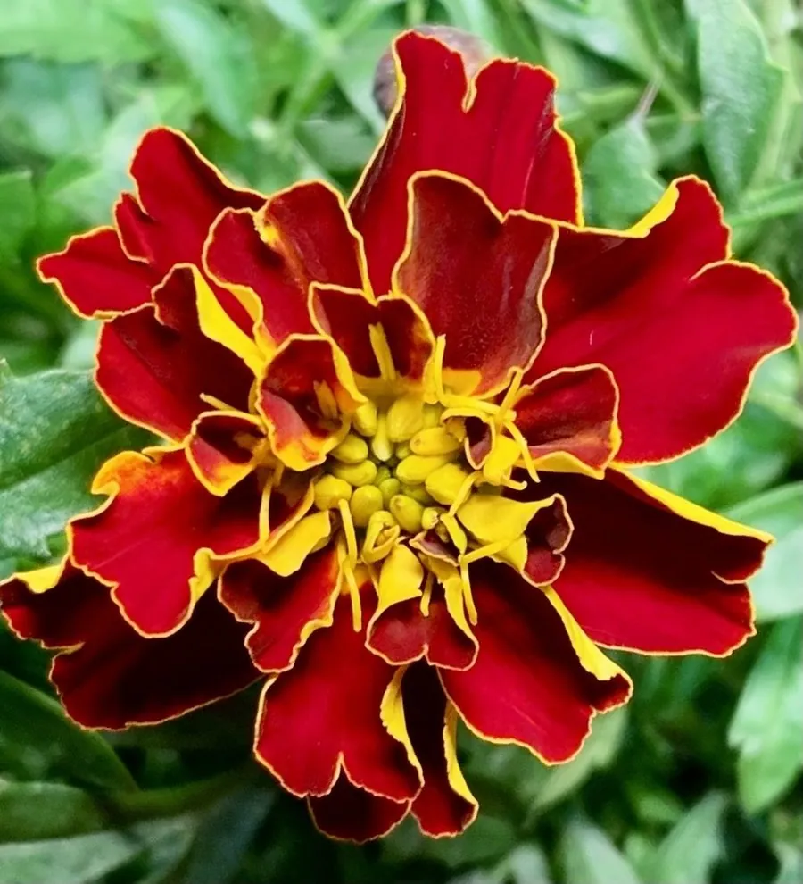

花卉与草本 · 植物界
孔雀草 Tagetes patula

菊科一年生草本，花径小巧、红黄双色，能驱赶根结线虫，是花坛与庭院最常见的草本花卉之一，原产墨西哥。
- 分类
- 门被子植物门纲木兰纲目菊目科菊科属万寿菊属
- 栖息环境
- 墨西哥的向阳草原与山坡，喜温暖、阳光充足
- 地理分布
- 原产墨西哥，世界温暖地区广泛栽培，中国各地花坛常见
- 保护级别
- 暂无评估
物种志
孔雀草为菊科万寿菊属一年生草本，株高 20–40 厘米，茎多分枝。叶片羽状全裂，裂片披针形，边缘有锯齿，揉碎后有特殊气味。头状花序单生，直径 3–5 厘米，舌状花红褐色、橙黄色或双色，中央管状花黄色，花期 6–10 月；果实为瘦果。
孔雀草原产墨西哥，喜阳光充足、温暖干燥的环境，不耐寒、怕积水，适应性强，能自播繁衍。它与万寿菊是近亲，但株型更小、花色更丰富，红黄相间的舌状花在花坛中十分醒目。根系分泌物能抑制根结线虫，常被种在蔬菜田间作伴生植物；花瓣也含叶黄素，可作天然色素原料；在南方温暖地区，花期可一直延续到初冬。
形态与习性
- 株高20–40 厘米，茎多分枝
- 花期6–10 月，单株花期长
- 果期8–11 月，瘦果线形
- 光照喜充足阳光
- 水分耐旱，忌积水
- 土壤疏松、排水良好的壤土
- 主要用途花坛观赏、驱线虫伴生、提取色素
趣味知识
- 孔雀草与万寿菊是近亲，但株型更小、舌状花常呈红黄双色。
- 它的根系分泌物能抑制根结线虫，常与蔬菜间作。
- 揉碎叶片有特殊气味，有人形容为“臭菊花”。
- 孔雀草能自播繁衍，种子落地后翌年常自行萌发。